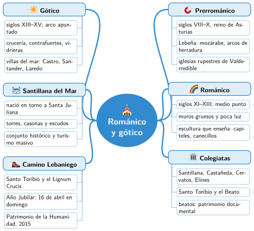

Bloque II · Cantabria, patrimonio cultural
UD06 Románico y gótico
Sesiones
- Sesión 6.1 El arte prerrománico
- Sesión 6.2 El románico cántabro
- Sesión 6.3 Colegiatas, iglesias y monasterios
- Sesión 6.4 El arte gótico
- Sesión 6.5 Santillana del Mar y su patrimonio
- Sesión 6.6 El Camino Lebaniego
Al terminar la unidad
Mapa mental de la unidad

✏️ Repasa la unidad con el mapa: tapa una rama y explica en voz alta lo que pone.